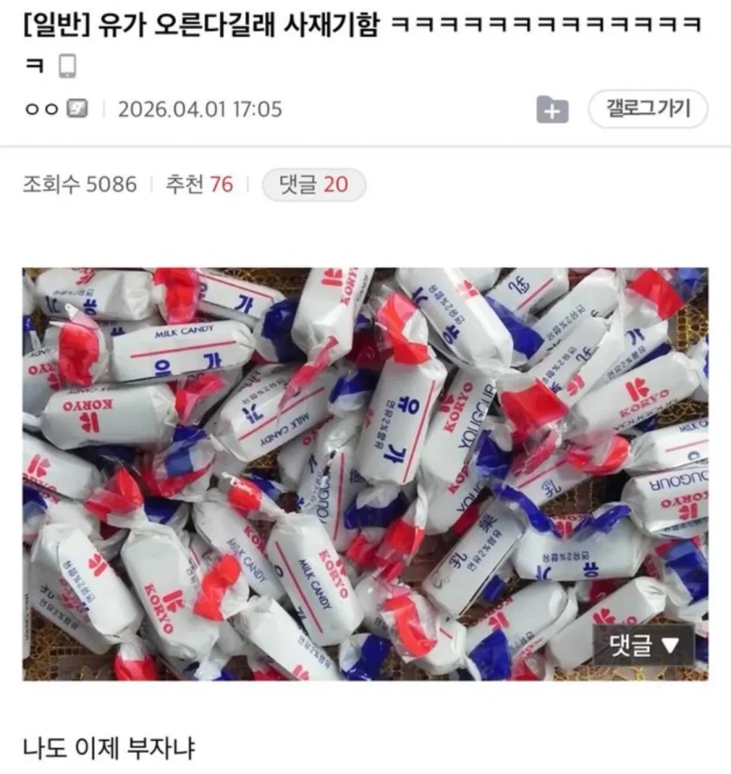
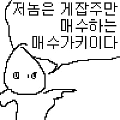

61 · 16 · 10 시간 전 · 원문

수집 당시 댓글 16개
tnseoqhRdma · 2 일 전
저거 맛있었는데 ㅎ
↳ 답글 · 년이하루처럼 · 1 일 전
할배요...
↳ 답글 · 부두술사 · 1 일 전
↳ 답글 · asldfhoae · 1 일 전
ㅇㅈㅋㅋㅋㅋ
년전개그 · 2 일 전

지구멸망바라기 · 2 일 전
저거 밀크맛이었나?
↳ 답글 · djdhhdh12 · 1 일 전
분유맛
행복한하루3 · 2 일 전
기름값 올라서 차는 못 굴려도 이건 입에서 굴리면 됨
아무말대연회 · 2 일 전
경제사범이네
컴빌런 · 1 일 전
다이소에 저거 비슷한거 1봉지에 1.5인가 1.0인가 팔더라
환경파괴범캐리어 · 1 일 전
할아버지 인기 간식
그런데이것은틀렸습니다 · 1 일 전
당도 같이 오르겠네
전자참새 · 1 일 전
분명 합법적인 일을 하고 있을 것
벨즈 · 1 일 전
웬전도사 · 1 일 전
현영이야?
스미티워밴재거맨젠슨 · 1 일 전
여름에 포장지뜯기 개빡셈


저거 맛있었는데 ㅎ